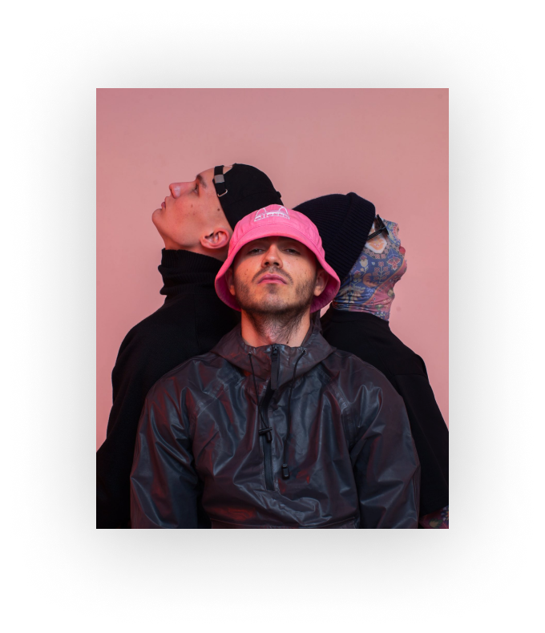

-
B
U
Y
T
I
K
E
T
S
-


CONCETRS
-
24/06/2022КИЇВконцерт Kalush Orchestra
-
24/06/2022КИЇВконцерт Kalush Orchestra
-
24/06/2022КИЇВконцерт Kalush Orchestra
SHOP
ПАНАМА ГУРТУ KALUSH / КАЛУШ ЧОРНА
500 грнПАНАМА ГУРТУ KALUSH / КАЛУШ РОЖЕВА
500 грн
ABOUT
«Kalush» — український реп-гурт, заснований у 2019 році. Отримав право представляти Україну на Пісенному конкурсі Євробачення 2022 з піснею «Стефанія».15 травня 2022 року гурт став переможцем «Євробачення-2022».
До гурту входять Олег Псюк (aka Псючий Син) — засновник і соліст, Ігор Діденчук — мультиінструменталіст, МС Килиммен та бек вокаліст Джонні Дивний. Гурт був названий на честь Калуша, рідного міста Олега Псюка.
Latest release
the Kalush Orchestra of Ukraine won the Eurovision Song Contest 2022 with the song: “Stefania”.